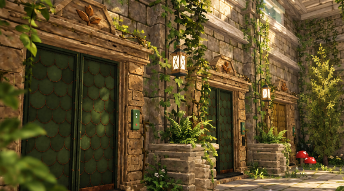
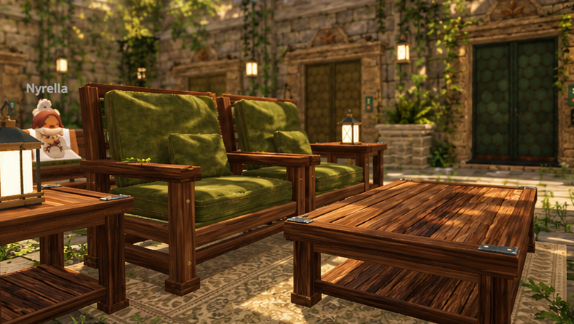
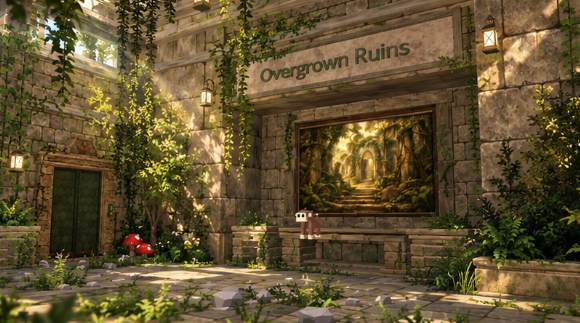

Overgrown
Ruins
An abandoned stone interior reclaimed by plants, vines and nature, combining aged architecture with a warm fantasy atmosphere.
About the project
Overgrown Ruins is a stylized environment built around the contrast between old architecture and returning nature. Stone walls, decorative doors, hanging vines, furniture and environmental details create a space that feels abandoned, weathered and slowly reclaimed by the surrounding greenery.
Selected Renders
Architecture, environmental details and different views of the ruins.

ARCHITECTURE & DOORS
INTERIOR DETAILS
RUINS ENTRANCE
FULL ENVIRONMENT
Creating the Ruins
Layout & Architecture
Planning the interior space, stone structure, door placement and overall environment layout.
Environment Details
Building furniture, decorative architecture, plants, rubble and environmental props.
Nature & Lighting
Adding vines, foliage and warm natural lighting to create the final overgrown atmosphere.